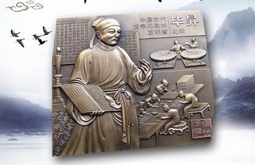
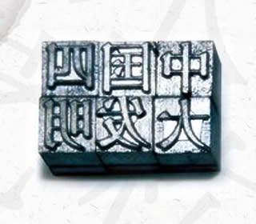

|
印刷术

印刷术：知识普及的引擎
印刷术解决了手工抄书效率低下、容易出错的问题，极大地推动了知识的普及。
技术飞跃：照技术演进的时间线。先是隋唐时期发明的雕版印刷术，现存最早的雕版印刷品是唐代868年的《金刚经》。到了北宋，平民发明家毕昇发明了活字印刷术，他用胶泥制成单个字模，可重复排版使用，大大提高了印刷效率，这是印刷史上一次质的飞跃。
世界贡献：活字印刷术后来传入朝鲜、日本及欧洲，对人类文明的进程产生了巨大影响，促进了知识的广泛传播和思想的解放。

|